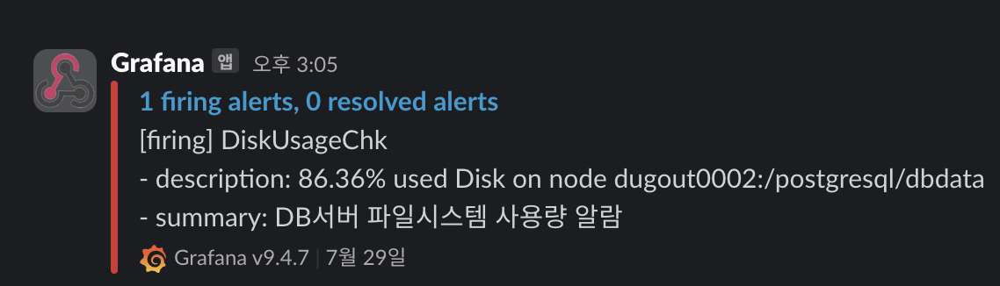

Rockplace careers (Database Engineer.)
롯데정보통신 LCLOUD MySQL DBaaS 구축 (2023. 09 ~ 2023. 12)
#Ansible을 이용한 VPC PaaS MySQL (DBaaS) 구축
#Standalone, ReplicaSet, InnoDB Cluster 제품 지원
#my.cnf 및 사용자 DB 계정, 수정 가능 변수 표준화
#부하테스트(Jmeter)를 통한 다방면 Failover 시나리오 가이드
#Orchestrator, MHA, Keepalived, HAProxy, MySQL Router를 이용한 고가용성 구축
#분리된 네트워크에 따른 Orchestrator 코드 수정(Go lang) 및 Orchestrator 버그 제보
(Percona Orchestrator 정식 반영)
#ReplicaSet 환경에 맞는 MHA 코드 수정(Perl)
-DBMS : MySQL 8.0
롯데캐피탈 차세대 L-ONE 시스템 구축 프로젝트 (2022. 06 ~ 2023. 06)
#MySQL 5.6에서 8.0으로 업그레이드 지원 수행
#Oracle to MySQL 일부 테이블 이관 지원
#DBMS 관련 문의와 장애 대응에 참여하고, DR 서버 구축 지원 (Replica 설정)
#시스템의 안정성 검증과 보안규정 준수를 위한 지원 수행
#안정성 검증 및 보안규정 준수 지원
-DBMS : MySQL 8.0
-Cluster : Infoscale
경찰청 여성안전계 챗봇 프로젝트 (2022.02 ~ 2022.03)
#저예산 프로젝트 DBMS 담당 미팅 참여
#챗봇 외부 협력사 DBMS 문의 지원 수행
#서대문구 경찰청 반상주 지원을 통해 내부 DB 관리 역할 수행
#고가용성 테스트와 장애 대응에 대한 지원 진행
-DBMS : MariaDB 10.6
-HA : Maxscale 2.5
한국투자증권 eFriend Expert(Open API) 프로젝트 (2021. 12 ~ 2022.02)
#초반 구성 및 DBMS 전체 관리 담당
#DBMS 및 Cluster 관련 문의와 장애 지원 수행
#시스템의 안정성 검증 및 보안규정 준수 지원
-DBMS : MySQL 8.0
-Cluster : MHA4MySQL
December & Company careers (Database Administrator.)
디셈버앤컴퍼니 전사 DB 단독 관리
#Fint App 메인 서비스 (PostgreSQL, PgPool-II)
#Fint 증권사 연계 주문, 원장 (PostgreSQL, Pgpool-II)
#Fint Pay 선불전자지급 서비스 (MariaDB, Maxscale)
#AML(자금세탁방지) (MySQL, MHA)
#Datawarehouse (PostgreSQL, Citus)
#Fint Blog (MySQL, RDS)
Grafana + Telegraf 모니터링
개발자 DDL 검수 및 최적화
개인정보보호 정책 데이터 암호화